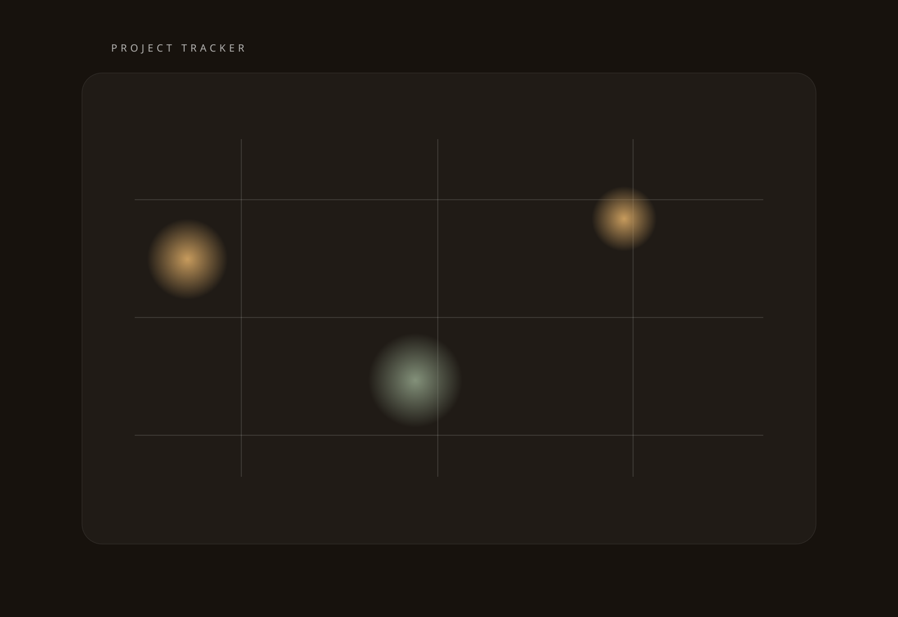

Project Index
A coherent view of active holdings, major initiatives, and strategic pipeline.
This area is designed to hold project summaries, capital status, operating notes, partner context, and milestone tracking across the family’s current footprint.